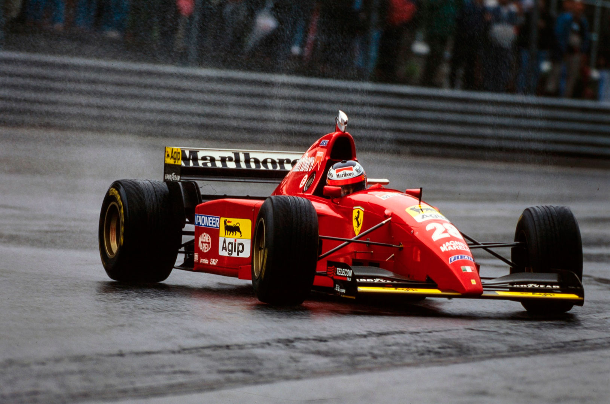

Spa-Francorchamps- 27/08/1995
SCHUMMY SOBERBO E ANTI-DESPORTIVO
Hill perde aposta na chuva. Schummy acerta e ganha anti-desportivamente. Grid louco, com Ferrari na 1ª fila e Schumacher na 8ª. Boas provas de Coulthard — abandona, Brundle — 3º, e Frentzen — 4°. Barrichello, 6º. Katayama rápido na chuva. Corrida emocionante. Incêndio na Jordan:
Francisco Santos
Spa-Franchorchamps é, depois do desaparecimento dos velhos Interlagos e Nurburgring, o mais desafiante circuito do calendário. Pela pista tortuosa, com quase 7km ao longo das encostas das Ardenas, e pelas sempre mutantes condições atmosféricas. Este é o maior de todos os testes para um piloto. Não há curva mais entusiasmante para um piloto que Eau Rouge-Radillon, agora felizmente de volta, com maior área de escape. Foi aqui que Clark, Stewart, Senna e outros grandes assinaram alguns de seus maiores momentos de pilotagem.
Claro que todos os GPs têm de ter a mesma pontuação, mas não será até justo que uma vitória em Spa tenha o mesmo prêmio que no Hungaroring. A vitória magistral de Schumacher nesta corrida, largando do 16° lugar do grid, merecia mais do que 10 pontos, tal foi, de novo, a visão, a premonição do piloto quanto à mudança das condições atmosféricas, tal foi seu espírito de autoconfiança, e tal foi o seu controle do carro na chuva, com pneus slick.
Comportamento recriminável
No entanto, esta arrojada vitória foi conseguida com um lamentável comportamento anti-desportivo em pista, por várias vezes bloqueando Hill. Foi soberbo em técnica, mas pecou por soberba, com a demasiada autoconfiança que o incita à arrogância e desprezo pelos outros e pelas normas. À 19ª volta começou a chover, e o inglês trocou imediatamente para pneus biscoito, apostando que continuaria chovendo. Schumacher jogou diferente: confiante no seu controle de carro, arriscou numa parada da chuva e na rápida secagem da pista. Claro que Hill rapidamente colou nele, tal a diferença de pneus com piso molhado — uns 8s por volta. O problema foi passar o alemão, que, repetidamente, mesmo nas retas, o bloqueou escandalosamente. Na primeira passagem juntos por Les Combes, o alemão quase jogou o inglês para fora da pista, a roda esquerda traseira do Benetton batendo na dianteira direita do Williams e o danificando um pouco a direção. Na longa descida a seguir a Rivage as manobras de Schumacher nas retas, foram lamentáveis, zigue-zagueando na frente de Hill, nitidamente mais rápido na chuva com pneus de chuva, para não o deixar passar. No final, a Williams apresentou uma reclamação. Resultado: Schumacher suspenso por um GP, com direito a sourcis.

Questão de previsão atmosférica
Incrível: há dois meses que não chovia naquela região das Ardenas. Mas, GP em Spa sem chuva, pelo menos numa zona da pista, não é GP. A questão nem é se vai chover. A grande dúvida é quando e por quanto tempo. Esses são os fatores que mudam tudo. Este ano começaram por mudar o grid do avesso. Imagine uma largada com Schumacher atrás de Katayama na 8ª fila do grid, e com Hill na 4ª fila, atrás de Irvine, e com as duas Ferrari na 1ª fila, o que não acontecia desde Hockenheim, 1994.
Incêndio nos boxes
Pela terceira vez este ano, houve problema num reabastecimento em corrida, mas, felizmente, sem problemas físicos. Foi com o Jordan de Irvine. A válvula de ventilação abriu-se por um instante, e escapou gasolina, que chegando nos escapamentos, se incendiou. Não fosse a rápida reação dos mecânicos, inclusive de outras equipes, como a Ligier, e o piloto poderia ter sido gravemente queimado.
OS TREINOS
Há um ano foi a Jordan e Rubinho que tiveram a primeira pole de suas carreiras. Agora foi Schumacher que ficou em 16º, sua pior posição de grid na carreira. Tudo devido à loteria da chuva em Spa. Houve apenas uma sessão de treinos em que não choveu ou a pista não estivesse molhada. Na sexta-feira de manhã, Alesi foi o mais rápido no piso molhado. Sua Ferrari mostrava-se muito mais estável que, por exemplo, o Benetton de Schumacher, que reclamava: “Não me sinto seguro com este carro. É muito difícil de controlar no limite”. Impressionante também esteve Frentzen, apenas a 0,12s de Alesi, com Coulthard 3º, com mais 0,9s. Herbert sai com força em La Source devido ao acelerador travado. O carro não consegue ser reparado atempo da 1ª qualificação e para preservar as possibilidades de seu líder, Herbert nem chega a treinar (Briatore não lhe cedeu o carro de Schummy). Depois de Panis, Lamy, Hill, Coulthard e Alesi serem os mais rápidos, foi Berger quem ficou com a pole provisória. Sábado de manhã, finalmente a pista seca. Os tempos começaram a ser competitivos, cerca de 22s melhor que na véspera, na chuva! Schumacher progrediu no acerto do carro, mas exagerou e pisou na grama molhada de Malmedy com duas rodas e saiu com violência, danificando bastante o carro. Resultado: os mecânicos não conseguiram aprontá-lo para as 13h, o que seria determinante.
Ferrari mais espertos
Faltavam cinco minutos para a 2ª qualificação começar e a pista estava seca. Mas, no horizonte os ceús estavam muito carregados. Jean Todt mandou seus carros e pilotos para o final do pitlane. Os mecânicos da Benetton ainda terminavam o conserto no B195 do campeão. Era certo que iria cair o maior pé d’água. Aberta a pista, os pilotos se precipitaram. Será que conseguiriam completar uma volta lançada? As duas Ferrari fazem uma volta de aquecimento, voltam ao box e regressam imediatamente à pista. São os únicos que conseguem uma volta lançada com pista livre e seca. Já Hill teve o azar de tentar sua volta rápida ao mesmo tempo de Montermini. Hakkinen e Herbert foram 3° e 4º. As 13.05h começou a chover forte, como se previa. No entanto, pouco depois parou e a pista começou a secar. Todo o mundo voltou para tentar chegar nas Ferrari, mas a pista nunca ficou completamente seca. Mesmo assim dava para Schumacher melhorar seu tempo da véspera. No entanto, as poucas voltas que fez até ao carro ter um problema de câmbio a pista não estava ainda seca. Chegou a estar na mesma fila de Lavaggi! No final do treino, quando a pista secou mais, o câmbio engatou uma 2ª no meio da reta e o V10 gritou às 19 mil rpm, não quebrou (!), mas seu treino acabou. Herbert, que, na véspera tinha sido privado de partilhar o carro do campeão, estava agora na 4ª posição. Era a 1ª vez desde Adelaide 91 (batido por Piquet), que Schumacher largava atrás de seu colega de equipe.

A CORRIDA
No warm-up, novamente chuva, e Alesi, o mais rápido, seguido de Hill e Schumacher. 1ª fila vermelha, pista ainda úmida, e céu ameaçador, tudo parecia favorável para à Ferrari. No entanto, Berger larga mal da pole, e Herbert consegue tomar o comando a Alesi na freada para Les Combes. O jovial inglês manteve o comando até Alesi devolver a ultrapassagem. Hakkinen tinha rodado e abandonado. No final da 2ª volta era: Alesi, Herbert a 1,36s, Berger a 1,93s, Coulthard a 2,1 s e Hill, a 3,3s. Schumacherjá tinha galgado de 16°para 10°, e, na volta seguinte já era 8°, a 9s de Alesi. Prometia… A 4ª volta Herbert estava de novo na liderança, Alesi foi ao box, saiu, mas um problema na suspensão traseira o levou logo ao abandono. Mas, o pequeno inglês manteve-se em 1° só por 2 voltas: primeiro, Coulthard, com um Williams mais estável, o ultrapassou na Les Combes, rodou ali mesmo, e depois, voltou a rodar no Bus Stop, na frente de Berger. O escocês manteve-se à frente de Hill, mostrando-se mais àvontade e aumentando a sua vantagem. Coulthard estava impressionante, como em Buenos Aires. No entanto, novo azar, câmbio, deixando o comando para Hill. Entretanto, Schumacher, que durante o comando de Coulthard já tinha subido a 5ª e depois a 4°, quando finalmente conseguiu passar o excelente Irvine, herdou finalmente a liderança da prova na 15ª volta quando Hill reabasteceu pela 1ª vez. De 16° para 1º em apenas 15 voltas, foi magnífico! E, poderia ter sido em menos, não tivesse encontrado o performante Jordan de Irvine, que logo no 1º reabastecimento se incendiou no box.
Aposta errada de Hill
Schummy reabastece à 18ª volta, Hill volta ao comando, mas à 19ª volta começa a chover, e o inglês fez sua aposta, foi o primeiro a trocar para pneus biscoito. Schummy continuou em 1º com os slicks. Hill, já com pneus de chuva, aproximou-se rápidamente na pista molhada. Mas, leva 2 voltas para o ultrapassar, já que as manobras anti-desportivas do alemão não o deixavam. À 24ª volta Hill tinha aberto 2,94s. Mas, era irreal. A pista secava e era impossível andar com pneus de chuva. Foi ao box para colocar slicks e perdeu não só a liderança, como a corrida. Apesar de à 27ª volta ter recomeçado a chover forte e, inexplicavelmente, a Direção de Prova ter mandado sair o Safety Car durante 3 voltas e ele ter ficado colado em Schumacher. O problema é que na 2ª ida ao box, Hill havia excedido a velocidade e foi penalizado com um stop & go, que o colocou em 3º a 13s de Brundle, a 12 volta do final. Estava entregue a vitória a Schumacher que, no entanto, a havia conquistado, apesar de forma pouco polêmica.
Brundle: merecido pódio
Para Brundle, que se mantinha lutando com os pneus de chuva numa pista já secando, seria um sprint final contra Hill, que em terceiro viu ainda a possibilidade de ganhar 6 pontos. Foi uma vibrante luta entre os dois ingleses, decidida a favor de Hill na última volta, quando os pneus de Brundle já não podiam competir com os slicks do Williams. Excelente corrida de Frentzen, que passou Blundell para o 4º lugar a 3 voltas do fim. Barrichello ganhou mais um ponto, apesar de parar 3 vezes, uma para fixar o cinto de segurança. Lamy esteve muito bem, em 10º, na volta do vencedor. Moreno teve o azair de ficar entalado pelo Safety Car, atrás de Schumacher, equanto Diniz era mandado passar, o que lhe deu mais chances de chegar na frente de seu colega, em 13°. □